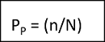
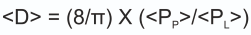

Stereological principles and digital image processing and analysis
1 Introduction
Stereology is an important tool used for the geometrical characterization of microstructures. This microstructural characterization refers to the geometrical characterization such as volume fraction of second phase, particle size distribution, size distribution of grains, and density of dislocations. Microstructures evolve due to processing done on the material, which in turn governs the properties of the materials. Therefore, the characterization of microstructure is an important aspect of materials science. The term stereology dates to 1960’s and it relates the 2-D images of the microstructures with the 3-D images and structures. In stereology, geometrical features of the structure of the material are quantified using various types of methods. Many mathematical tools are used to transform the 2D measurements made on a planar microstructure to 3D parameters of the structure of the solids.
2 Typical Microstructural Elements
the typical elements that one can observe in a microstructure are:
- 3-D particles
- 2-D surface or interfaces between particles and grains
- 1-D linear features such as dislocations, fibres, grain edges etc
In materials science, we deal with the opaque materials, and so we take a section of the material then polish it, etch it, and put it under a microscope to observe its features. It is important to mention here that the section cuts of lines will give points, section cuts of surfaces will give lines, and section cuts of 3-D will give 2-D surfaces as shown in Figure 1:
Another way to represent the images is by producing a projected image and its representation is possible if our material remains transparent to light. Then lines will be projected as lines, surfaces will be projected as area projections, and will form a projected image. Both 2-D images can be quantified and related to the 3-D structure but the stereology behind them functions differently.
3 Tools to observe the microstructures
- Optical microstructures are studied using the Reflected Light Microscopes (Metallurgical microscopes) for opaque materials.
- Transmitted light microscopes are used for observing the microstructures of the transparent materials.
- Electron microscopes are used with higher resolutions to observe the images to obtain greater details and understand its features in the microstructures. Among these microscopes, most common are Scanning Electron Microscopes (SEM) which shows secondary and back scattered electron images, Transmission Electron Microscopes (TEM) which shows projected images, X-ray map images, and Scanning Tunnelling Microscopes (STM). Stereology has the power to quantify the true interlamellar spacing of the pearlite.
4 Important concepts of Stereology
4.1 Sectioning or sampling
Stereology involves sampling in a systematic random manner to ensure an unbiased representation of the entire structure to be studied. Sectioning involves random sampling of the 3-D block using a 2-D plane. Selection of the sample is done randomly and unbiasedly towards any specific regions of interest.
4.2 Sampling probes
Sampling probes are the basic measurement units used for the microstructural assessments and studies. Depending on the specific stereological method and property of interest, it can be represented using different shapes such as points, lines, areas, or volumes. To bring the accuracy to obtained results, selection of a proper probe is of utmost importance. Section can be done using these lines and probes and it is also known as sampling of materials or sampling by probes of various dimensions. If we section a 2-D system then the probe should be 2-D, section with line means a 1-D probe, and sectioning using a point means a 0-D probe.
5 Sampling of structures using different probes
5.1 Sampling using 2-D Probe (Plane probe)
2-D Sampling can be viewed as an intersection of a plane with the structure. 3-D structure intersects using planes. After sectioning, lines appear at the sections of surfaces, points appear at the planes where the lines are present in 3-D structure, and area elements and section profiles appear at the places where particles are present in 3-D materials.
5.2 Sampling by 1-D Probe or Line
If one puts grids of lines along horizontal and vertical directions on the 2-D probe, it is then known as sampling by 1-D probe or line probe, which essentially is the intersection of a line with the structure. One can check for the intersections lines make with the surface features.
5.3 Sampling using 0-D Probe (Point Probe)
The basis of working of 0-D probes is the intersection of a point with structure. We are interested to know the number of points which intersect with the particles.
The use of all the probes mentioned above plays a key role in understanding the structures and helps to correlate with the properties to get a proper process-structure-property correlation paradigm within the materials domain.
5.4 Interaction of Probes with the Structure
Probes interacts with the microstructural features to produce the following “events” (e.g., interactions of plane probes with a volume feature produces 2-D cross section):
| 3-D Feature | Probe | Event | Measurements |
|---|---|---|---|
| Volume | Plane | Cross-section | Area |
| Surface | Plane | Line Traces | Length |
| Line | Plane | Point Intersection | Count |
| Volume | Line | Intercept Length | Length |
| Surface | Line | Point-Intersection | Count |
| Volume | Point | Point-Intersection | Count |
Stereology is built on the concept of geometrical probability. Thus, if there is a large number of particles and there is a plane probe which cuts the structure, not all particles will get cut, and only some of them will be cut by the plane. How many of them will be cut will depend on the probability of the plane probe intersecting the particles.
6 Estimation:
Stereological equations and mathematical models are employed to estimate the properties of interest, such as volume, surface area, length, or number of objects. These estimations are based on the data collected from the samples.
7 Important Consequences
- Probe is of a lower dimension than the structure and leads to loss of information (e.g., shape). So, during analysis sometimes we use assumed shapes.
- Stereological methods are statistical in nature. The analyses yield an average value and are subject to statistical errors.
- Stereological methods are based on mathematical rigour, probability and statistics.
8 Methods of Stereology
8.1 Point Counting
In point counting, a grid with regularly spaced points is superimposed on a sample microstructure, and the number of points falling within the region of interest is counted. This method is commonly used for the estimation of volume fractions and particle densities.
Consider the above structures (Figure 2) coming from spherical particles in 3-D. The area fraction of the particles is defined as the total area occupied by the particles per unit area of the image. Since the microstructures vary from each other statistically, concepts of stereology are applied to carry out these calculations.
Steps for Calculation
- Put grid of points on the given microstructure. Now, count the total number of points and then count the total number of points lying inside the circular particles.
- Now, measure the point fraction (PP)

where, n = Total number of points intersecting the particles
N = Total number of points present in the grid - Now, calculate the point fraction from each of the three microstructures. The average value, <PP> is an estimate of area fraction: AA = <PP>. This value is obtained with a statistical or random error associated with it.
8.2 Line Intercept Method
The line intercept method involves the placement of lines randomly onto the sample microstructure followed by counting the total number of times a line intersects the structure of interest. This is the most common method used to estimate the length and surface area.
Consider the image in Figure 3. Here, we will only have particle boundaries and we will draw horizontal gridlines over the microstructures.
Steps for Calculation
- Draw horizontal gridlines over the microstructures.
- Count the number of intersections with the particle boundaries.
- Calculate, PL = n/L, number of intersections per unit length.
- Obtain the average value of PL, < PL >.
 - Average diameter of particles is given by:
n = number of intersections
L = Total length of all the horizontal lines
8.3 Area Fraction Method
This method estimates the volume fraction of the structures within a 2-D plane. It involves the count of total intersection points of the structures with a grid of points or lines.
9 Applications of Stereology
- Biological Sciences
Cells, tissues, organs, and neural networks are studied in greater detail with the help of stereology. - Materials Science
Microstructural analysis, grain size calculations, fibre orientations, and porosity are studied using the concepts of stereology for different metallic and materials systems and are extremely helpful in the quality control of the material design.
- Geology
Geological sample properties such as rock microstructures, textures, grain sizes and porosities are studied using stereology. - Medicine and Healthcare
Stereology helps to study the tissues in greater detail by providing information regarding the volume and structural distributions of different substances inside the tissues. It also helps in the study of different types of diseases and in finding their cure and treatments.
10 Challenges and Advances
Unbiased sampling, handling of complex geometries, and dealing with larger data sets are some of the key challenges for the application of stereology to study the microstructures in proper depth. However, the recent advances in the fields of computational materials science and evolution of Artificial Intelligence and Machine Learning tools are the highly effective in tackling the problems that are associated with the advancement of stereology in the field of materials science.